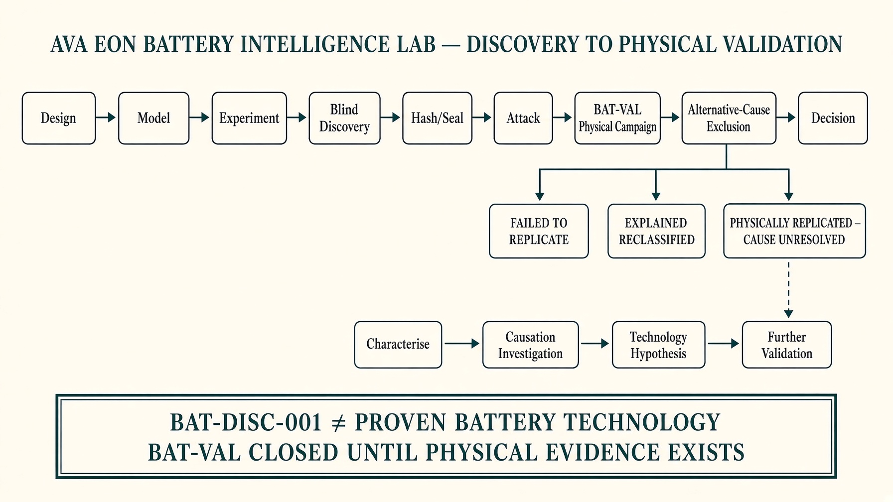

BAT-VAL-001 v1.0.0
Pre-registered physical validation protocol. This page is not an announcement of a successful experiment.
We found a candidate signal. Instead of declaring a discovery, we froze the validation test before running it. The protocol is now public and hash-locked. The technology gate remains closed until physical evidence clears the pre-registered threshold.
Gate closedMeasurements: nonePacket: empty
Protocol object SHA-256
6162d17e0e0f65754c3944560842efbb1a97390921bd217394defe2506032d8a
Lab 1.0.0. Discovery Engine 1.4.0 is frozen and is not published here. The observed 17.9 mV peak is not the acceptance target.
A positive late-band residual must exceed max(3 × campaign uncertainty, 5 mV) on at least 3 cells from at least 2 lots, with four-wire sensing, traceable calibration, and raw files hashed before scoring.
Outcome C may continue to characterisation only. It does not establish chemistry, nickel, Ω CELL, AVA-BATT, AVA-NEXUS, commercial viability, or a new battery technology. Software tests are not physical validation.
